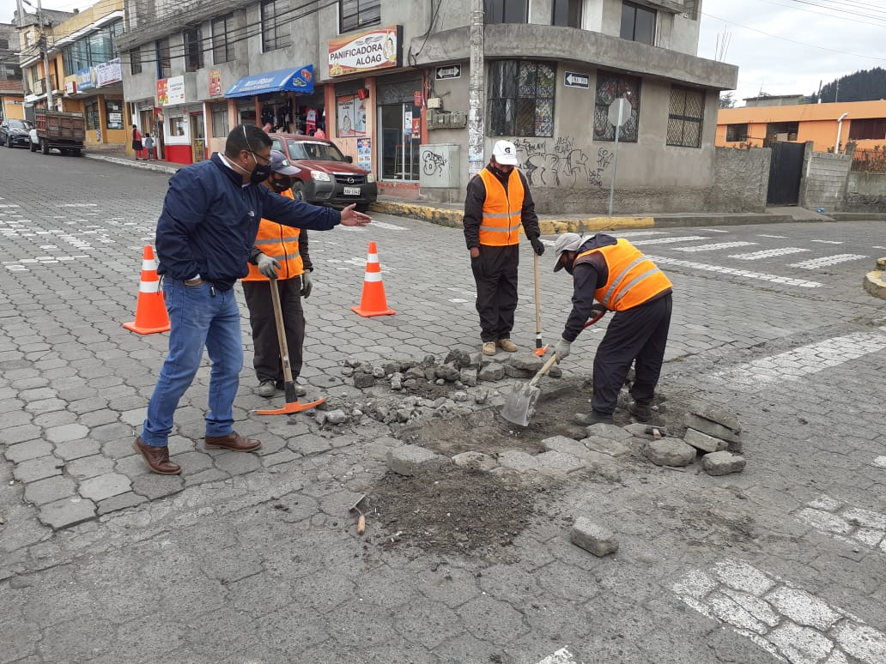

MISIÓN:
Liderar y articular procesos de Desarrollo a nivel Parroquial. Promover y ejecutar políticas públicas de Desarrollo sustentable, establecidas en la Constitución de la Republica, Código de Organización Territorial Autonomías y Descentralización Plan de Desarrollo Parroquial, Plan de Ordenamiento Parroquial, que responde a las necesidades de la Población, para conseguir una mejor calidad de vida con la participación de actores internos y externos, de manera participativa, equitativa e incluyente a través de asambleas de concertación.
Establecer espacios de deliberación pública con el objeto de fortalecer las capacidades colectivas de interlocución con las autoridades y de esta forma incidir de manera informada en la gestión de lo público para crear una sociedad mejor.
Garantizar la participación de los representantes legales de los barrios y actores sociales de manera que se permita el ejercicio de los derechos de ciudadanía y asegure la gestión democrática del GAD de ALÓAG, garantizando la prestación eficiente de servicios públicos, promoviendo y facilitando la participación Ciudadana y la inclusión social, impulsando el mejoramiento de la calidad de vida de su población que permita visualizar objetivamente el cambio económico y social en el territorio.
